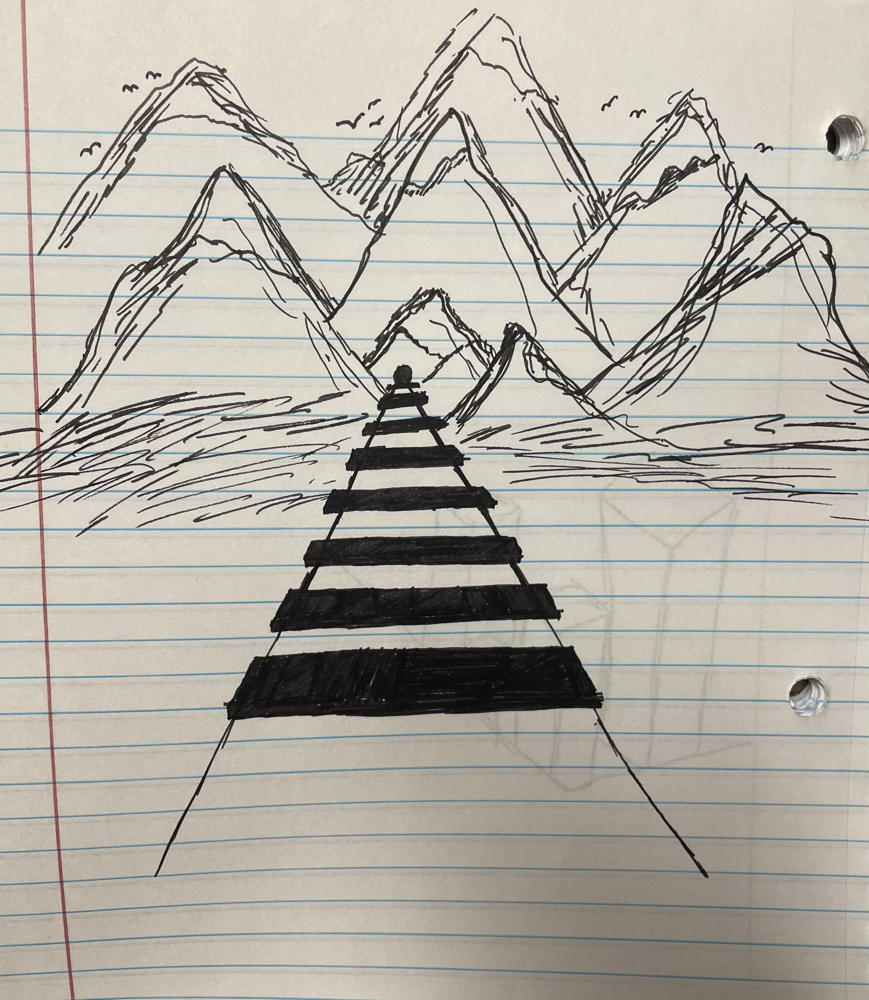
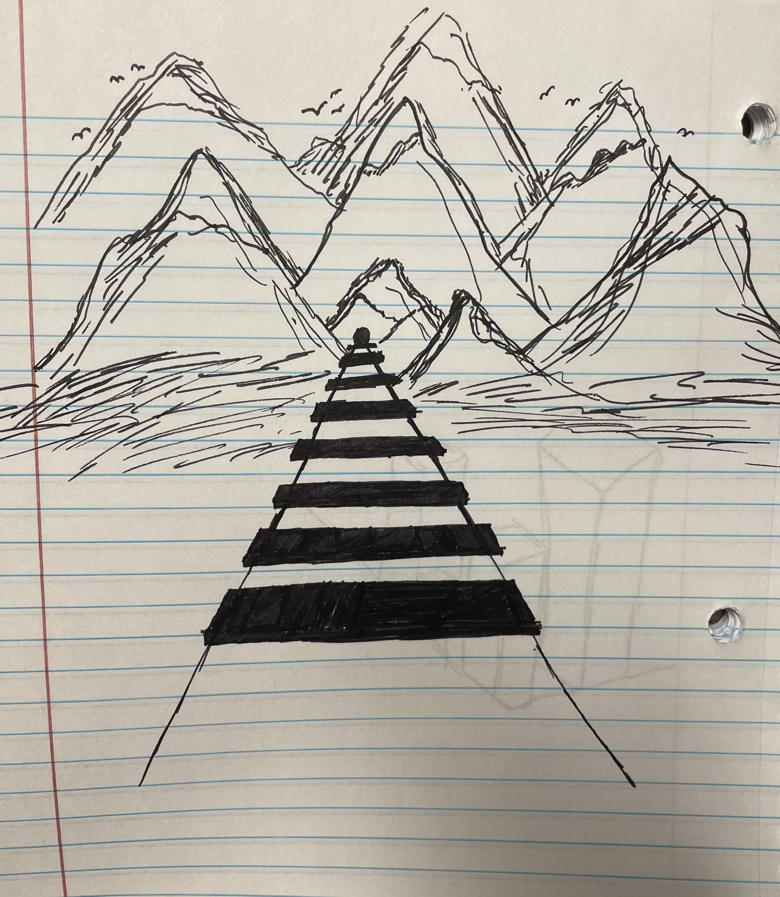

Drawing
The Power of the Pencil
I have always expressed interest in drawing. It was a stepping stone for my journey into the art field. I would often sketch in my notebooks and create intricate designs. Drawing has been a passion of mine for as long as I can remember. Through art, I have been exposed to the importance of perspective and light. Still life drawings have enabled me to understand that different perspectives of an object wil yield different results; some drawings might not have one item while some will have all of them.


Mediums of Drawing
Drawing has been a creative outlet for me; being able to sketch items from real life allows me to see the intricacies and details of it. I have used different mediums such as charcoal, drawing pencils, and white pencil on black paper. The different mediums have opened my eyes to the differences that each of them can make. My favorite is the charcoal medium because of the ability to smooth the shadings. When I used charcoal for my drawings, I would use my finger to smear the charcoal so that the drawing would have cleaner shadings.
Other Designs Made By Me
 
